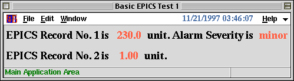

<!DOCTYPE HTML PUBLIC "-//W3C//DTD HTML 4.01 Transitional//EN">
<HTML lang="ja-JP">
<HEAD>
<META HTTP-EQUIV="Content-Type" CONTENT="text/html; charset=ISO-2022-JP">
<TITLE>KBFrame $BNc(B EPICS CA $BMQ%k!<%A%s$r;H$&>l9g(B</TITLE>
</HEAD>

<BODY BGCOLOR="White" TEXT="Black" LINK="Blue" VLINK="Teal" ALINK="Red">

<A NAME="top" HREF="index-ja.html">$BL\<!(B</A>
<A HREF=emmeas-ja.html>$BNc(B emittance$BB,DjCM7W;;MQ%Q%M%k(B</A>
<A HREF=cmptepics-ja.html>$BNc(B EPICS$BMQItIJ$r;H$&>l9g(B</A>

<HR><DIV ALIGN="CENTER"><H2>$BNc(B EPICS CA $BMQ%k!<%A%s$r;H$&>l9g(B</H2></DIV><HR>

<H3>1. SAD$B$+$i0lDj;~4VKh$K(BIOC$B$r%"%/%;%9$9$k>l9g(B</H3>

<P>10$BICKh$K(B"some_record_name"$B$H(B"some_other_record_name"($BN>J}$H$b<B:]$K$O(B
$BB8:_$7$J$$(B)$B$rFI$_9~$s$G!"$=$NCM$rI=<($9$k!#(B1$B9TL\$N(B"some_record_name"
$B$K4X$7$F$O!"%"%i!<%`$NDxEY$bI=<($9$k!#(B</P>

<PRE><CODE>
FFS;
w = KBMainFrame["BasicEPICSTest1", f, Title-&gt;"Basic EPICS Test 1"];

f1 = Frame[f, PadY-&gt;5, Fill-&gt;"x"];
f2 = Frame[f, PadY-&gt;5, Fill-&gt;"x"];
v1 = ""; s1 = "normal"; ch1 = CaOpen["some_record_name"];
v2 = ""; ch2 = CaOpen["some_other_record_name"];
font = Font-&gt;TextFont["times","bold",18];
side = Side-&gt;"left";

l1a = TextLabel[f1, Text-&gt;"EPICS Record No. 1 is ", side, font];
l1b = TextLabel[f1, TextVariable:&gt;v1, FG-&gt;"tomato", side, font];
l1c = TextLabel[f1, Text-&gt;" unit. Alarm Severity is ", side, font];
l1d = TextLabel[f1, TextVariable:&gt;s1, FG-&gt;"tomato", side, font];

l2a = TextLabel[f2, Text-&gt;"EPICS Record No. 2 is ", side, font];
l2b = TextLabel[f2, TextVariable:&gt;v2, FG-&gt;"tomato", side, font];
l2c = TextLabel[f2, Text-&gt;" unit.", side, font];

getvalue[] := (
  $FORM = "6.2";
  e1 = CaRead[ch1];
  v1 = ToString[e1[[1]]];
  s1 = Switch[e1[[3]],0,"normal",1,"minor",2,"major"];
  v2 = ToString[CaRead[ch2][[1]]];
  $FORM = "";
);

getvalue[];
ReadRecord := After[10, getvalue[]; ReadRecord];
ReadRecord;

TkWait[];
</CODE></PRE>

<P></P>

<H3>2. Monitor$B$r%;%C%H$7$F!"CM$NJQ2=$,$"$C$?;~$KCM$r<u$1$H$k>l9g(B</H3>

<P>1$B$N>l9g$HF1MM$NI=<($r$9$k%3!<%I$O!"0J2<$N$h$&$K$J$k!#(B</P>

<PRE><CODE>
FFS;
w = KBMainFrame["BasicEPICSTest2", f, Title-&gt;"Basic EPICS Test 2"];

f1 = Frame[f, PadY-&gt;5, Fill-&gt;"x"];
f2 = Frame[f, PadY-&gt;5, Fill-&gt;"x"];
v1 = ""; s1 = "normal";
ch1 = CaOpenMonitor["some_record_name",
  ValueCommand:&gt;(
    $FORM = "6.2";
    v1=ToString[ch1[Value]];
    $FORM = "";
    s1=Switch[ch1[Severity],0,"normal",1,"minor",2,"major"];
  )];
v2 = "";
ch2 = CaOpenMonitor["some_other_record_name",
  ValueCommand:&gt;(
    $FORM = "6.2";
    v2=ToString[ch2[Value]];
    $FORM = "";
  )];
font = Font-&gt;TextFont["times","bold",18];
side = Side-&gt;"left";

l1a = TextLabel[f1, Text-&gt;"EPICS Record No. 1 is ", side, font];
l1b = TextLabel[f1, TextVariable:&gt;v1, FG-&gt;"tomato", side, font];
l1c = TextLabel[f1, Text-&gt;" unit. Alarm Severity is ", side, font];
l1d = TextLabel[f1, TextVariable:&gt;s1, FG-&gt;"tomato", side, font];

l2a = TextLabel[f2, Text-&gt;"EPICS Record No. 2 is ", side, font];
l2b = TextLabel[f2, TextVariable:&gt;v2, FG-&gt;"tomato", side, font];
l2c = TextLabel[f2, Text-&gt;" unit.", side, font];

TkWait[];
</CODE></PRE>

<P></P>

<P><A HREF="#top">top</A></P>

<HR><ADDRESS>$B$3$N%Z!<%8$K4X$9$k8f0U8+!&<ALd$O(B
<A HREF="mailto:samo.stanic@kek.jp">Samo Stanic</A>
$B$^$G(B.</ADDRESS>
</BODY>
</HTML>
